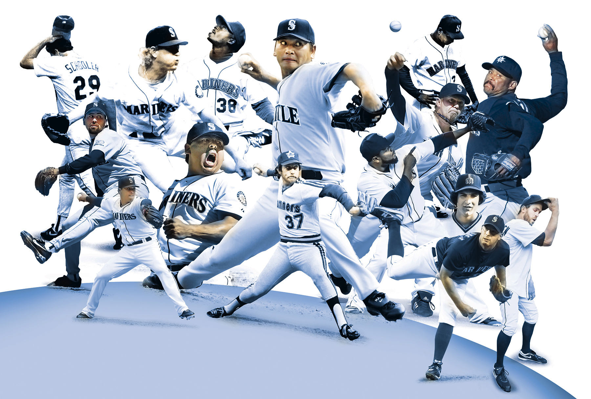

<%= t.include("partials/_head.html", { page: "closers" }) %>
<%= t.include("partials/_nav.html", { page: "closers" }) %> <%= t.include("partials/_ad.html", { type: "banner" }) %>

Closing time
Can Edwin Diaz end Mariners' fans justified end-of-game jitters?
Photo illustration by Rich Boudet / The Seattle Times
By Larry Stone
Seattle Times columnist
Published March XX, 2017
<%= markdown.stone %>
<%= t.include("_nextPage.html", { previous: "trends" }) %> <%= t.include("_credits.html") %> <%= t.include("partials/_navBottom.html") %> <% if (json.project.production) { %> <%= !json.project.embedded ? t.include("partials/_foot.html") : "" %> <%= t.include("partials/_workHere.html") %> <% } %>